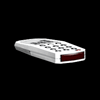

Hieronder volgt een lijst van alle verzamelobjecten en items die je in de klaslokalen kan gebruiken:
 Zaklantaarn
Zaklantaarn
Jake’s zaklantaarn is vanaf het begin van het spel beschikbaar; je hoeft het niet te verzamelen om het te kunnen gebruiken. Je kunt de zaklantaarn gebruiken om overal in het lokaal licht te schijnen, zodat je lichtbronnen en verzamelobjecten kunt vinden. Jake houdt de zaklantaarn voor zich uit, dusje kunt het niet gebruiken om een lichtpad te creëren waar Jake op kan lopen. Als je de zaklantaarn een paar seconden hebt gebruikt, is de electriciteit op, maarje kunt het weer opladen door de zaklantaarn 2 seconden in de lengte te schudden.
 Katapult
Katapult
Je kunt de katapult gebruiken om ramen of verafgelegen lichtbronnen in te slaan. De katapult is beschikbaar vanaf het begin van het spel. De kogels moeten echter tijdens het spel worden verzameld om het te kunnen gebruiken. Je kunt de verzamelde kogels alleen gebruiken in het lokaal waar je ze hebt gevonden.
 Katapult kogeldoosje
Katapult kogeldoosje
Met het verzamelen van elk doosje voor de katapultkogels voegt de speler één kogel aan de inventaris toe.
 Cherry bomb
Cherry bomb
Je kunt de cherry bomb overal in het lokaal gooien. Zodra het zijn doel raakt licht het open verwoest alle voorwerpen in de directe omgeving. Op vervolgniveaus worden breekbare voorwerpen naast het raam geplaatst. Als de speler het raam wil inslaan zonder het voorwerp te breken, dan moet hij de cherry bomb naar de andere kant van het raam te gooien.

Afstandsbediening van de televisie
De afstandsbediening van de televisie bedient alle televisies in het lokaal. Als de speler dit item heeft, dan kan hij met de A-knop de verschillende televisietoestellen aan- en uitdoen. Een vernietigde televisie kan niet meer worden aangezet.
 Signaalfakkel
Signaalfakkel
Je kunt de signaalfakkel vóór Jake gooien omeen smalle strook licht te creëren dieals overbrugging naar een andere lichtbron kan worden gebruikt. Je kunt de signaalfakkel gebruiken door op de A-knop te drukken en een horizontale zwaaibeweging met de Wii-afstandsbediening te maken. Je kunt de signaalfakkel niet opnieuw verzamelen of gebruiken als je hem hebt gegooid. Een signaalfakkel vlamt kort op, gaat dan langzamer branden en verdwijnt tenslotte.